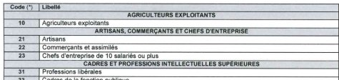

DataStorm est le bureau d'expertise et de conseil du groupe ENSAE-ENSAI, dont appartient également le centre de recherche CREST. DataStorm valorise, dans les domaines de l’économie, de la statistique ou de la data science, les activités de recherche faites en interne ou dans les laboratoires du CREST et de l'Institut Polytechnique de Paris.
DataStorm propose à ses employés de consacrer 20% de leur temps à des projets de R&D : contribution à de l'open-source, à des projets internes, formation personnelle, participation à des conférences.
Plusieurs exemples de projets factices constitués de bribes de projets réels sur lesquels j'ai contribué (clients ou R&D interne).
Optimisation contractuelle dans le domaine énergétique
- Augmentation de séries temporelles thermosensibles : décomposition en profils saisonniers et en une élasticité thermique pour se ramener à un bruit. Décomposition de ce bruit par transformée de Fourier.
- Simulations grâce à un processus stochastique utilisé dans le domaine de la finance.
- Développement d’une IHM de mise en œuvre avec gestion de tâches asynchrones : back-end Python (Scipy, SkLearn, Numpy) ; front-end R Shiny (Reticulate, ShinyBatch).
- Gestion des risques : Optimisation des tarifs appliqués et estimation d’une trajectoire de tarif.
Analyse de l'impact d'une opération marketing
- Conception d’un score de propension : sélection de variables avec LASSO, et benchmark de plusieurs modèles (LASSO, Forêts Aléatoires, Logit).
- Analyse d’impact par appariement sur score de propension.
- Développement d’un package R dédié.
Conception d'un tableau de bord manipulant des données de santé
- Développement d’une interface R Shiny permettant d’effectuer des requêtes sur une base de données de santé.
- Réflexion sur une méthologie pour mettre en place des protections des données sensibles : publication d'un livre d'or et animation d'un webinaire.
- Instauration d'une protection des données de santé via de la confidentialité différentielle.
Du DevOps au MLOps
- Mise en place de chaînes d'intégration continue (build, test, documentation).
- Exploration de méthodes et d’indicateurs pour évaluer la pertinence des prédictions d’un modèle (Forêts Aléatoires).
- Conception d’une méthodologie d’estimation de l’anormalité des nouvelles données vis-à-vis du jeu d’entraînement (IsolationForest, OneClassSVM).
L'offre Cozy se base sur le constat simple : dans le schéma qu'est devenu internet, l'utilisateur ne contrôle plus ses données personnelles. Quand nous naviguons sur la toile, nos données sont collectées et utilisées automatiquement pour proposer un contenu personnalisé, qu'il s'agisse du service premier du site ou de publicités. Pour effectuer ces personnalisations, les entreprises collectent ou achètent des données sur l'utilisateur, données stockées et centralisées sur des serveurs de ces dernières.
Cozy Cloud propose une solution de cloud personnel, pour concevoir un internet où chacun reste maître de sa donnée personnelle. La donnée est stockée dans un domicile numérique de données, appelée Cozy, sur lequel viennent se greffer des applications utilisant de manière responsable et transparente le contenu très hétérogène du domicile numérique.
En pratique, à cette heure-ci (Décembre 2019), l'offre applicative Cozy se résume en plusieurs concepts :
- Un socle sécurisé open-source permettant d'héberger des domiciles numériques, la stack cozy. Elle est téléchargeable gratuitement pour des utilisateurs qui auraient à souhait d'auto-héberger leur Cozy sur un serveur en leur possession.
- Un domicile numérique stockant des données et des fichiers de manière protégée, le Cozy.
- Des applications permettant d'afficher ses données sous différentes formes (système de fichiers avec Cozy Drive, relevés de compte avec Cozy Banks, albums photos avec Cozy Photo, carnet d'adresses avec Cozy Contact).
- Des connecteurs, capables d'aller récupérer des informations, des documents, depuis des sites internet externes (Orange, MAIF, Crédit Agricole, Leclerc, Ecole Directe, SNCF et bien d'autres).
Ajouter de l'interaction entre les domiciles numériques de chacun
Mais reprendre le contrôle sur ces données personnelles ne signifie pas les garder pour soi. Cozy Cloud a implémenté tout un protocole de partage sécurisé et permet des sorties de données contrôlées par l'utilisateur.
Un des challenges de ce paradigme est d'imaginer l'introduction de l'intelligence artificielle. Comment permettre à des utilisateurs de partager leurs données avec des personnes/entités de confiance pour entraîner ensemble un modèle ? L'intérêt est double car ce protocole pourrait permettre aux Data Scientists d'imaginer des modèles sur des données encore plus sensibles (détails du salaire, santé, ...) et de permettre de profondes avancées dans certains domaines où l'accès à la donnée est difficile.

Du Machine Learning respectant la confidentialité par conception
Pour Cozy Cloud, j'ai travaillé sur une architecture et un protocole Peer-to-Peer permettant d'accéder à de la donnée confidentielle partagée par des utilisateurs. Ce protocole a été imaginé au cours d'une thèse CIFRE dont j'ai pris le relais le temps d'un stage. Je suis revenu à la fin de mon stage sur le projet dans cet article.
Ce stage m’a amené à découvrir de nouveaux langages de programmation. J’ai eu la possibilité d’expérimenter Go et ReactJS, langage et framework que je n’avais jamais manipulés aupart avant. J’ai été aidé dans la prise en main de ces langages par certaines de mes expériences passées : j’ai trouvé en Go des ressemblances avec C++ et en ReactJS des ressemblances avec la programmation Android.
Enfin de réfléchir à une manière de décentraliser les principaux algorithmes de Machine Learning, j'ai appréhendé les problématiques d'apprentissage automatique à un bas niveau, en m'inspirant des implémentations en Map Reduce. Cette approche était très formatrice et m'a permis de cerner encore mieux les enjeux de confidentialité et de performance des algorithmes d'intelligence artificielle.
Présentation de la Junior-Entreprise (JE)
Ensai junior Consultant (EjC) est la Junior-Entreprise de l’ENSAI, spécialisée dans le domaine des statistiques, de l'économétrie et de l'informatique. Les Junior-Entreprises sont des organisations d'étudiants, de Grandes Ecoles ou d'Universités, désireux de se professionnaliser et de travailler pour des entreprises en parallèle de leur scolarité. Ils interviennent directement sur les projets de professionnels, comme de réels consultants junior travaillant pour un cabinet de conseil.
L'association était administrée, à l'époque, au quotidien, par une équipe de 19 élèves veillant sur son bon fonctionnement. Les administrateurs sont répartis en plusieurs fonctions/pôles : le secrétaire général, la trésorerie, le pôle contrôle-interne, le pôle developpement commercial, le pôle communication, le pôle informatique. Tous ces pôles sont supervisés par une présidence qui a déjà une année d'expérience dans la JE.
Un mandat en Junior-Entreprise doit s'adapter aux contraintes de l'école (période d'examen, vacances, etc). Il est rythmé par les prestations pour les clients, les projets internes et certaines phases stratégiques qui rendent l'association pérène : recrutement et formation, préparation d'un audit mené par la Confédération Nationale des Junior-Entreprises (CNJE), échanges avec les anciens administrateurs.
Ce temps consacré bénévolement pour ENSAI junior Consultant m’a apporté, outre le bonheur et la fierté d’appartenir à l’équipe, beaucoup de compétences qui me sont utiles dans ma vie professionnelle. La Junior-Entreprise m’aura permis d’accroître mes compétences statistiques, informatiques et entreprenariales. Ce parcours m'aura fait mettre un premier pied dans le monde professionnel.
Vice-Président (1 an)
La présence du mot « entrepreneur » dans la marque déposée Junior-Entreprise n’est
pas là par hasard. Etre dans une Junior-Entreprise, c’est prendre conscience des
problématiques d’une entreprise. Avoir en considération tous les devoirs et les enjeux
d’Ensai junior Consultant. Savoir que pour faire progresser la structure, il faut dans un
premier temps conserver et transmettre les acquis de l’organisation. Cette mission est
largement assurée par le processus RFP (Recrutement, formation, passation). De ces acquis,
il faut savoir faire le constat de ce qui fonctionne et de ce qui pourrait être amélioré. Ce
constat se fait généralement en fin de mandat pendant la période d’élection de la nouvelle
présidence, et lors des discussions avec les anciens administrateurs.
Avec mes deux camarades à la présidence 2018 de l'association, nous étions - par exemple - tous les trois conscients d’une amélioration
possible de la communication interne et externe et nous avons essayé de définir une stratégie pour répondre aux problématiques posées.
Cette stratégie, nous l’avons décrite suivant plusieurs axes : le fonctionnnement interne de la Junior-Entreprise, la relation avec les Ensaiens, le rayonnement auprès des entreprises, la place d’EjC dans le mouvement.
Nous avons constitué et contruit une équipe dont nous avons été les responsables durant un an. Ensemble, nous avons supervisé des projets, résolu des problèmes, essayé de faire progresser la structure.
En fin d'année 2018, nous avons conseillé la nouvelle présidence dans la constitution de leur équipe avant de peu à peu transmettre les reines et préparer la dernière tâche du mandat : l'audit organisationnel et financier.
Nous avons eu la joie quelques temps après notre fin de mandat de voir ENSAI junior Consultant intégrer pour la seconde fois de son histoire la liste des trentes meilleures Junior-Entreprises de France. Cette récompense fut le fruit de bien des efforts
menés bénévolement par tous les membres de l'association durant plusieurs mandats, en parallèle du travail effectué pour nos études. Aujourd'hui encore, nous gardons contact avec l'association afin de conseiller et d'aider les générations qui ont pris notre suite.
Chef de projets (2 ans)
Durant mes 24 mois passés comme administrateur chez EjC, j'ai pu observer, apprendre puis m'essayer au rôle de chef de projet.
Pour le compte d'ENSAI junior Consultant, j'ai réalisé ou aidé à la réalisation d'une dizaine de propositions commerciales.
J'ai assisté à deux reprises un chef de projet, puis endossé sur trois études ce rôle.
Ces trois études avaient des problématiques différentes, des méthodologies différentes
mais gardent en commun d’impliquer le travail de deux consultants. Ces trois
méthodologies m’ont permis de suivre, d'un autre angle de vue, des cas concrets d’analyses descriptives, de régressions logistiques ou d’élaboration d’une application R Shiny.
Durant la conception des propositions commerciales, j’ai pu bénéficier de l’aide d’étudiants, mais également de
permanents à l’ENSAI. J’ai eu à considérer certaines techniques statistiques avant de les avoir
vues en cours. Etant un étudiant se nourrissant de projets concrets, cette approche a été, pour moi,
la meilleure introduction possible aux cours de l'ENSAI.
J’ai ainsi été le relais entre 3 clients et 6 consultants. Ces études m’ont permis de
gérer la pression d’un calendrier sans la pleine maîtrise des différents acteurs des trois
projets. Cela m’a apporté professionnellement dans la diplomatie requise à faire valoir ses
droits, ses volontés, en restant courtois. Sur ces études, il a fallu résister à des clients
offensifs, essayant de prolonger l’étude malgré le contrat signé. Il a fallu être téméraire pour
obtenir un retour de tous les papiers administratifs et patients, pour résister à la pression
qu’implique d’être l’intermédiaire entre un client et un consultant. J’ai
fait de mon mieux pour gérer les retards pris, les compromis entre demandes du client et
possibilités des consultants, les moments « de rush ».
Sur mes propres études, comme sur celles des autres, j’ai pris part, à plusieurs reprises,
à des « réunions de crise » pour essayer de trouver rapidement la meilleure solution à un
problème imminent.
A noter qu'être chef de projet à ENSAI junior Consultant, c'est aussi préparer la majorité des documents
administratifs relatifs à l'étude. Cet aspect de la mission m'a permis de découvrir des contours juridiques dont
j'ignorais l'existance.
DSI (1 an) et Développeur Android (1 an)
Pendant un an au sein du pôle informatique, j’ai pu travailler en duo à la mise à jour du site
internet, à la gestion des outils informatiques utilisés par les différents pôles. J’ai aidé à garantir une bonne communication entre les différents pôles, mais aussi entre la Junior-Entreprise et le monde extérieur.
Parti de connaissances quasi inexistantes en HTML, CSS et PHP, j'ai co-conçu et co-implémenté un blog.
A la fin du mandat, nous avons dispensé sept formations et nous avons réfléchis aux projets que nous pourrions transmettre pour le futur de patrimoine informatique de la JE.
Par la suite, en parallèle de mon rôle de Vice-Président, j'ai conçu la première version de l'application Android de la Junior-Entreprise.
Cette réalisation m'a fait progresser en Java, m'a fait découvrir Git et m'a plus globalement enseigné à diagnostiquer et résoudre des bugs
en utilisant les forums comme stackoverflow, ou des documents techniques officiels.
Le projet auquel j'ai pris part
Les professions et catégories socioprofessionnelles forment un langage commun permettant de représenter le monde social. Ce langage, présent dans les programmes de lycée, a la qualité d'être clair et compréhensif par tous, de l'expert au non-initié. Cette aspect permet sa présence dans des questionnaires auto-administrés. Il est également précis au point d'être utilisé comme variable de construction d'indicateurs économiques.

Cette nomenclature de la population a été créée en 1982. Elle remplaça, à l'époque, une première nomenclature, moins précise, datant de 1954 : les CSP (catégories socioprofessionnelles). Ces deux outils ont permis de classer la population suivant certaines caractéristiques d'intérêt (profession, caractéristiques de l'organisation, étude, ...) pour produire des analyses statistiques, économiques, sociologiques.
Comme le monde change, au gré des décisions économiques des acteurs qui le constituent, des emplois naissent et disparaissent. Afin de maintenir un outil d'une précision remarquable, la PCS doit être reprise et mise à jour. A l'époque la dernière rénovation datait de 2003, elle fut motivée par un rapport de l’Inspection Générale de l’Insee rédigé par Guy Neyret et Hedda Faucheux. Comme en 1999 et ce rapport, la rénovation de 2020 fait suite à un état des lieux précis des apports et des limites de la PCS. Etat des lieux prenant en compte le progrès remarquable de l'informatique et les évolutions d'une économie qui a vu se développer, entre autres, les métiers du numérique, et une nouvelle forme de travail indépendant.
Ma mission dans ce projet
Comment fournir des outils informatiques et statistiques à même d'équiper au mieux la rénovation et la maintenance de la nomenclature des PCS, de la création à la documentation de la nomenclature ?
L'outil central à l'architecture d'applications que j'ai développée est le classeur de synthèse de la PCS. Ce classeur LibreOffice est doté de macros permettant de concevoir la nouvelle nomenclature, de la reprendre et de diffuser son contenu sous différentes formes. Il se compose d'une série d'onglets plus ou moins automatisés, facilitant la création manuelle d'un index d'un très fort volume, et son intégration dans des outils annexes.
Une des attentes pour mon stage, en marge de la production du classeur de synthèse de la PCS, fut de produire un programme permettant de générer la documentation relative à la nouvelle nomenclature. J'ai fait le choix de Python et LaTeX pour leur facilité de reprise, pour la rigueur de LaTeX dans la mise en page et l'efficacité de la lecture du classeur de synthèse induite par Python.